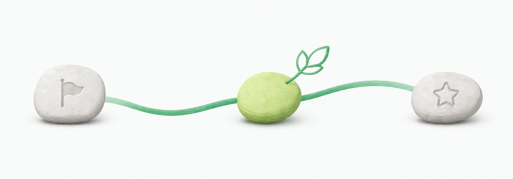

今日兑现
今天的承诺
今日首次兑现 · 待完成
把一件事，做到完成。
先写下计划，再开始专注。
今日完成 0/0

计划专注兑现
从第一件开始
今天要兑现什么？
0项任务建议任务
先从三个清晰目标开始
建议任务不会自动计入今天，可以单独发布或一次发布全部。
新增任务
给今天一个清晰目标
专注中
当前任务
保持节奏
剩余时间00:00
更多处理方式
学习足迹
每一次兑现，都算数。
查看每日状态，为黄色日期补做未完成任务，也可以使用自由日卡。
月度视图
本月兑现地图
全部完成部分完成未完成自由日
自由日卡
0 张可用
每累计 7 个绿钩日解锁 1 张；自由日不计入完成率。
今日复盘
看见过程，才更容易进步。
专注、短暂休息和无法继续的情况，都会如实留在今天的记录中。
今日记录
专注的每一分钟都有迹可循
0 分钟已专注
0 次短暂休息
0%整体进度
奖惩
每一次兑现，都有回应。
集中查看奖励、阶段解锁和安全约束记录。
小奖励池
完成之后，给自己一点甜头
安全惩罚池
只做安全、可执行的约束
我的
让工具适应你的节奏。
当前为游客本地模式，数据只保存在这台设备的浏览器中。
账户与云端
本地体验用户
无需登录也能继续完成兑现
登录后可把任务、节点、专注记录、奖惩、设置和复盘安全保存到个人云端。
Beta 开发测试：验证邮件暂仅用于项目所有者或团队授权邮箱。云同步状态正在检查…本地数据会始终先保存，网络恢复后再同步。
数据存储本机双重备份
当前阶段v1.1 Beta
PWA 状态支持安装
问题反馈告诉我们你的体验与建议

本地数据安全
给学习记录留一份可带走的备份
无论是否登录，都建议定期导出；换设备或清理浏览器数据前尤其需要备份。
数据与隐私
匿名使用统计
统计由 51.LA 提供。你可以随时关闭；关闭后不再发送使用事件，之后打开产品时也不会加载统计服务。
督促偏好
让提醒有用，也有分寸
系统通知尚未授权通知
提醒并非闹钟：页面打开时可按设定时间精确提醒；安装 PWA 且系统支持时会尝试后台补偿，但仍可能因省电或浏览器限制而延迟、漏发。
正在检查提醒状态…